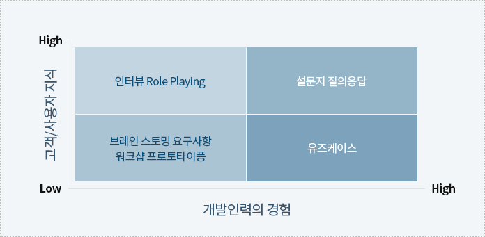

1. 요구사항 도출 활동
- 다양한 소스로부터 획득 (고객, 마케팅, 개발자, …)
- 좋은 요구사항을 정의 하기 위하여 필요한 정보를 획득
- 기술적, 사회적 Communication 메커니즘에 기반
- 추상적 요구(needs) 구체적 요구(Candidate Requirements)
2. 요구사항 도출 절차
- 이해관계자 식별
다양한 이해관계자로부터 요구사항을 도출하기 위해 관련된 이해관계자를 식별한다
- 이해관계자 분류 및 식별
- 이해관계자 역할 및 주요 관심사항 정의
- 이해관계자 검토 및 설명
- 이해관계자 요구사항 도출
식별된 이해관계자로부터 요구사항을 도출한다
- 인터뷰 대상 정의 및 질의서 준비
- 이해관계자 별 요구사항 도출
- 이해관계자 요구사항 정의
도출된 요구사항을 분석하고 상세화하여 요구관리가 될 수 있는 형태로 기록한다
- 이해관계자 요구사항 정의
- 이해관계자 요구사항 분석
- 이해관계자 요구사항 검토 및 확인
3. 요구사항 도출기법 및 선정기준
고객/사용자의 지식수준과 개발조직의 경험에 따라 적절한 기법을 선택하는 것이 중요
일반적으로 가장 많이 쓰는 방법은 인터뷰와 브레인스토밍
Case1)
솔루션이 새롭게 개발되는 경우, 새로운 도메인 영역으로 개발경험이 낮다
고객이 경험이 있다면 인터뷰, 고객도 지식이 낮다면 요구사항 워크샵을 권고함
Case2)
이미 만들어진 솔루션을 업그레이드 하는 경우, 개발조직의 경험이 높아
유즈케이스나 질의응답 기법을 사용하는 것을 권고함

| 기법 | 설명 | 적용 상황 |
|---|---|---|
인터뷰 |
Ask Question & Listen Answer 관련자들과 직접 대화를 통하여 상세정보를 도출 |
|
요구사항 워크샵 |
주제에 대한 토론 일정 주제에 대한 토론을 통하여 결론 도출 |
|
유즈케이스 |
사용자 관점의 (기능적) 요구사항의 단위로써, 시스템의 기능을 명확하고 일관성 있게 표현 |
|
브레인스토밍 |
Group Session 그룹(소수인원)에 의한 의견생성 |
|
질의응답/설문지 |
Questionnaire 통계적 분석기법 기반 |
|
4. 요구사항 도출 시 가이드
요구사항 도출 시 주의사항
- 현재 정의한 프로젝트 범위의 완전성 및 적절성여부를 파악하고 필요한 경우 변경조치를 취한다.
- 요구사항은 시스템에서 처리하여야 하는 “What”에 초점을 두고 “How”는 사용자 요구를 효과적으로 이해하기 위한 수단으로 활용
- 요구사항 도출 워크샵은 너무 많은 인원이 참여하는 경우 도출까지 소요시간이 많이 걸린다.
- 따라서 아키텍처, 개발자,설계자 등을 포함하여 최소의 인력이 참여 하는 것이 바람직하다.
- 목소리 큰 사람의 의견만 수집될 수 있으므로, 균형성을 고려하여 골고루 의견을 수렴한다.
누락 요구사항 발견
- 모든 사용자 계층이 요구사항을 제시하도록 한다.
- 추상적인 요구사항을 상세화하여 개발자와 사용자의 Gap을 해소
- 시스템 요구사항, UC, 이벤트, 비즈니스 규칙 등을 기능 요구사항과 추적하여 필요한 모든 기능이
- 도출되었는지 확인한다.
- 요구사항 분석 시 ERD, DFD, STD 등 다양한 모델을 활용하여 검증한다.
- CRUD 매트릭스를 활용한다.
- 특정숫자를 기준으로 요구사항을 정하는 경우 모든 가능한 범위 값이 도출되었는지 확인한다.